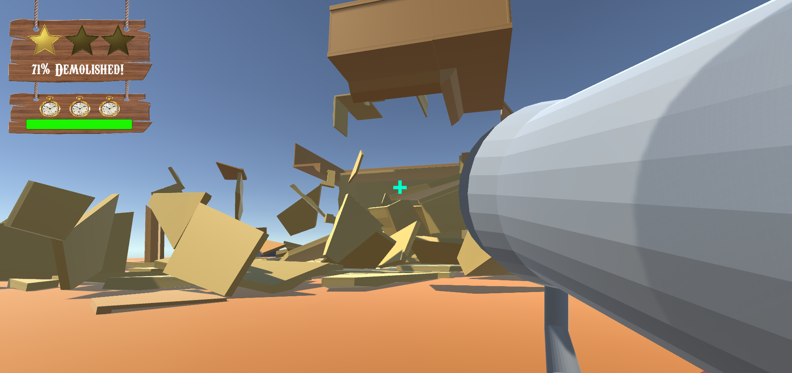

Demolition Express
On a prototype project comprised solely of programmers (it was quite a sight), I took the challenge of creating the destructible objects and systems behind the chaotic action of Demolition Express. Created from the randomly generated string of words "Silly Bazooka Cowboy", my team focused on a simple gameplay loop of a wild-west demolition crew tasked to demolish abandoned buildings. However, the wackiness comes in the prototype's multi-character shifts: the player is able to launch a cowboy out of a human-sized rocket launcher, and after assuming the perspective of this now-flying cowboy, is able to take the perfectly shot with a much more normal-sized bazooka. This two-step approach drove the design every step of the way and allows the player to create unique angles and perfectly-aimed shots for themselves. Read on to see how I set up and implemented the destruction that rounds off the game's core idea and brings the "demolition" in Demolition Express.
Wait, there's TWO bazookas?
Yes, yes, there is. We instantly latched to the idea of a two-stage shooting sequence where the camera seamlessly switches between the two cowboys as the player shoots themself into the air for the final shot. It's a silly idea, but silly was a design staple from the very beginning.
The ability to shoot the player into the air allows for new angles of the building to be seen and reached by the bazooka's rockets. If a player launched themselves up high and wanted to make a hole in the roof, then the systems would need to allow for this to happen. How was I going to dynamically destroy specific sections of a larger structure in a way that remained clean and optimized?
There were a few tools in my toolbelt that I relied on - Blender plugins and the concept of modularity in asset development. I'll walk through each tool below and what I learned from the experience, and how it led to some explosive success.
When There are Four Programmers, Someone Has To Be The Artist
When I was given the task of creating the modular assets needed to construct a destructible building, I first got to work on the base meshes for the pieces needed. I worked by keeping a tight grasp on clean transforms and ensuring pivots were set in a way that vertex-snapping would be easy for designers in Unity. Once the initial base pieces were made (wall, corner, floor), it was time to think about how to make it destructible. Luckily, I was able to find a very useful Blender plugin named Cell Fracture. This module allows you to break apart a mesh into fractured pieces based on several parameters that allow for more control. It was here that I got the idea for the systems behind the destruction.
Each destructible object has two children: it's whole and fractured version. If the object is affected by an explosion, it'll swap the active child from the whole to destroyed version. Doing it this way has a few benefits: it keeps prefabs clean and easy to parse, it looks seamless to the player, and it doesn't lean on dynamic instantiation that could lead to issues in terms of precise collider interaction. After creating the whole and fractured versions in Blender and importing them to Unity, the prefabs were carefully setup to include both versions and ensure their transforms matched in such a way that switching them would be almost undetectable.
Every fractured piece has it's own Rigidbody that allows for that physics-based chaos that drives the fun of the game. However, considerations in terms of optimization had to be put in place. If there were dozens to hundreds of small objects moving, each with their own Rigidbody and colliders, could the game handle it? After lots of playtesting and careful watch of the profiler, I was pleasently surprised by the performance. While explosions can trigger other explosions and cause chain reactions, most of the building is only demolished in chunks at a time. This allows the scripts to quietly despawn broken pieces after a time and ensures the CPU is never throttled by every modular part of the building being destroyed at once (which still runs quite well, surprisingly).
With the actual destructible objects completed, there was also the explosions to consider. I made a decision early on to, at least for this prototype, not rely on Unity forces and instead find an alternative way to simulate an explosion. What I came up with was simple but effective - a sphere.
Make things go boom
The prototype's explosion works like this: a small sphere is instantiated at the place of rocket (or explosive barrel) collision and grows outwards simply through lerping it's scale to a maximum size. The sphere is set to a certain layer that triggers the destructible objects on collision. Not only does this expanding sphere make things fall apart, but since it has a collider of it's own, it pushes these fractured pieces outwards like an explosion would. Using the sphere approach ensured we had full control of the scale and size of the "explosion". It also made it so the explosion was easily-viewable; a perk that was invaluable in terms of playtests and general development.
As mentioned above, these explosive spheres can trigger other "weak points" (explosive barrels) which would cause their own spheres to expand in turn. It was once this system was in place that designers were able to handcraft the level to allow these chain reactions to occur in a way that was satisfying and fun. The result was a wild and oddly-addicting prototype that made full use of the destruction that was baked into it's very premise.
What I Learned
I settled into a technical artist position on this project, which was a great opportunity to try out new work methods and see what stuck. My work in Blender continued to open me up to new modeling techniques that will allow me to better communicate with artist's in the future. The in-Unity systems were great continued practice on creating cleanly-designed systems that are well-documented for designers, as well as other programmers. For example, my focus on creating easily placeable prefabs was invaluable for others to create test buildings for themselves without needing to set any associations themselves.
The project was also a great time to iron out my work process further, including new communication techniques with my team and a focus on daily scrums. I made it a personal goal to always ensure I was on the same page with others when working, and they in return knew what I was working on at any given moment. This ensured that when questions did arise, we knew exactly who to ask and when to do it.
Wanna see more?
If you're interested and want to see more, watch our trailer and play the game on our itch.io page here! I would love to get in contact and discuss programming, new opportunities, or games in general using the methods below. Thanks for reading!